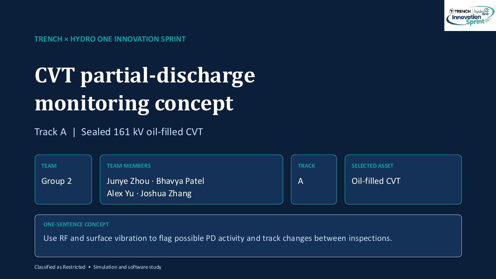
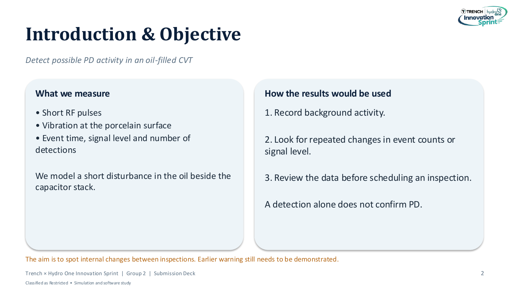
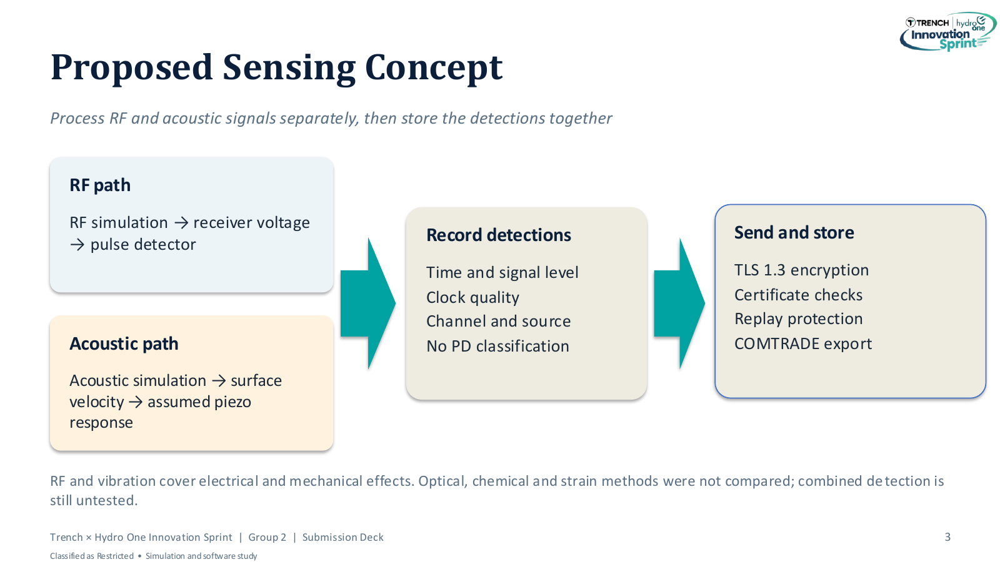
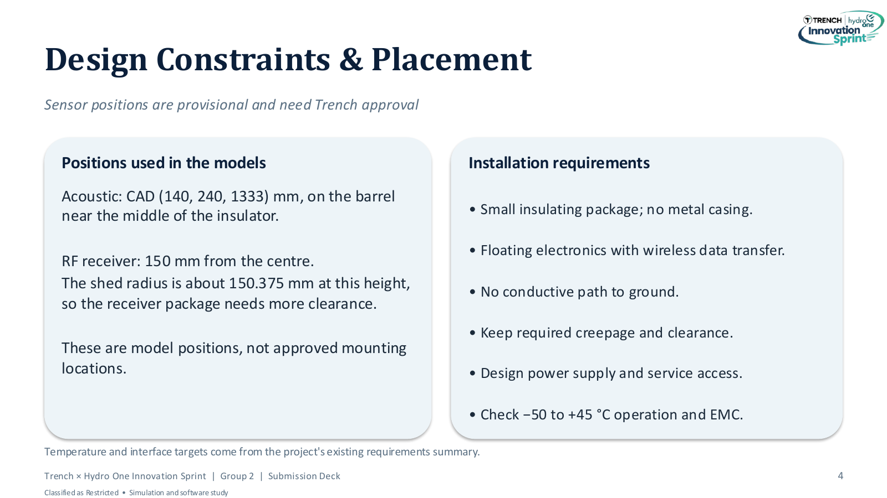
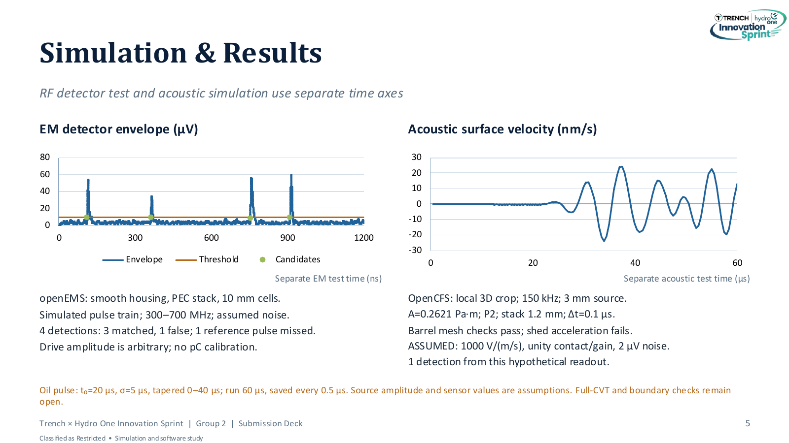
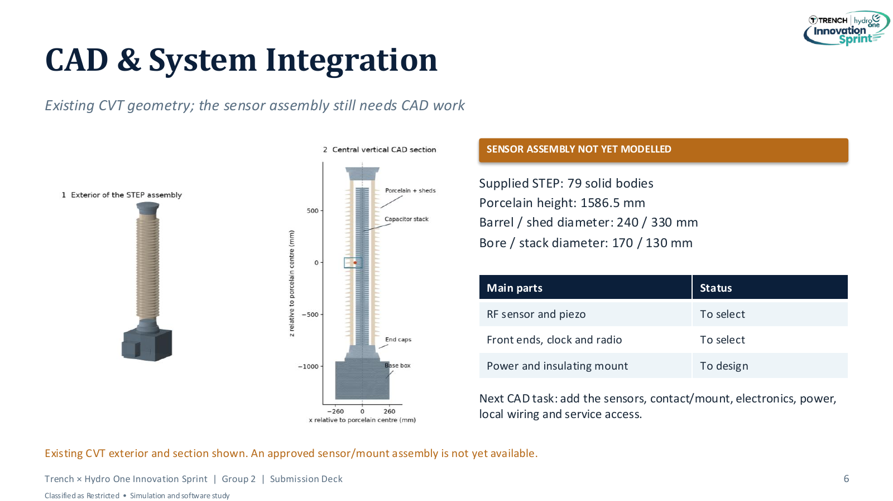
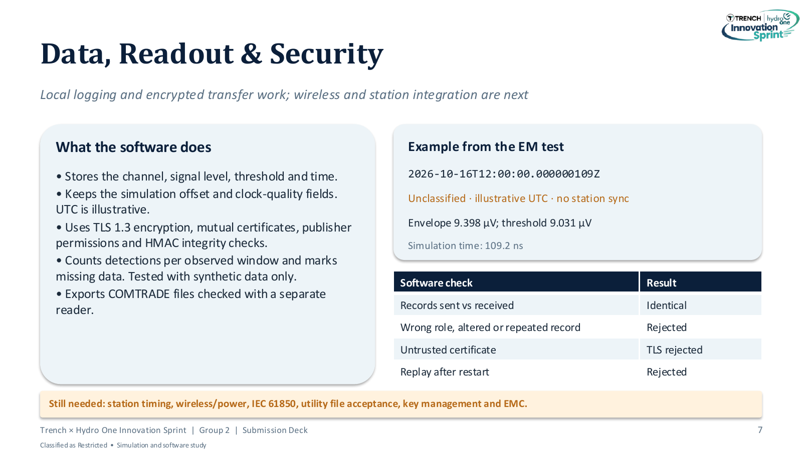
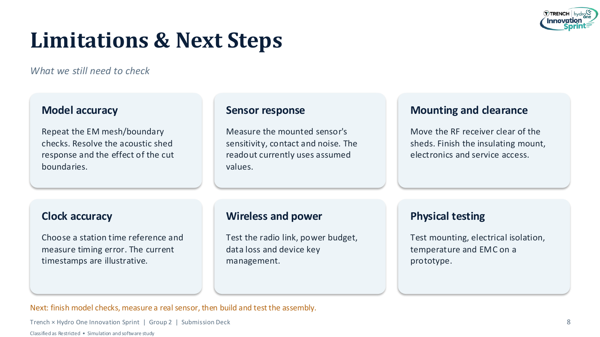
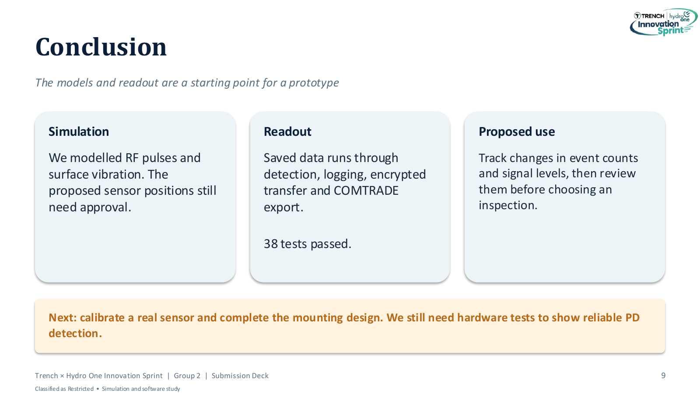
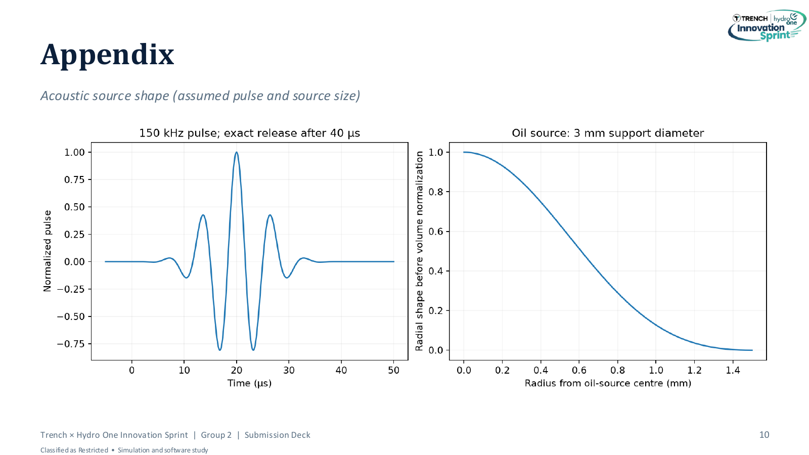

University Project
Trench × Hydro One Innovation Sprint
CVT partial-discharge monitoring concept. Winning concept, 5th place.
Team Lead · Oct 2026
Group 2: Junye Zhou, Bhavya Patel, Alex Yu, Joshua Zhang
Python · openEMS









